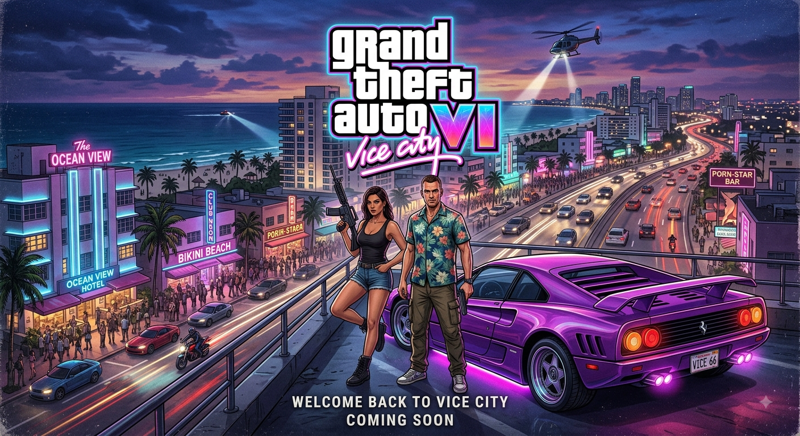
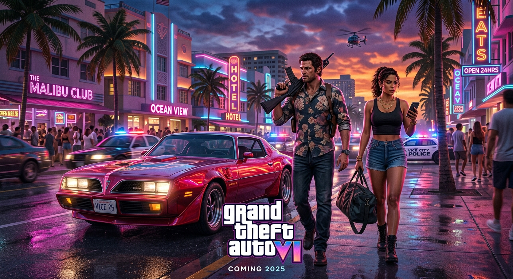

Meu primeiro post
Pronto para o maior lançamento da história dos games? Conecte-se com a comunidade, fique por dentro das atualizações e domine Vice City com a gente.
Por Matheus22
Informação e especulações sobre o GTA 6

Pronto para o maior lançamento da história dos games? Conecte-se com a comunidade, fique por dentro das atualizações e domine Vice City com a gente.
Por Matheus22

Explore a nossa segunda visão conceitual para GTA VI. Uma imersão profunda no contraste entre as luzes de néon noturnas de Vice City...
Por Matheus22